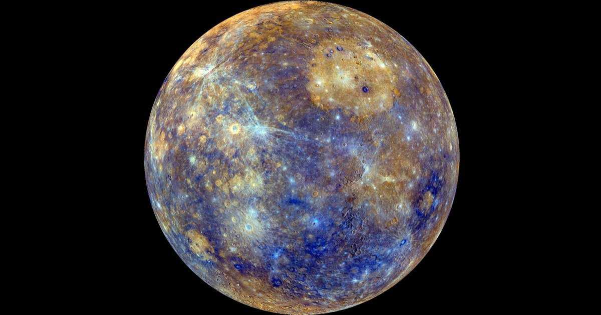

|  |
|---|
| Es el planeta más cercano al Sol, el más pequeño del Sistema Solar y el más rápido en su órbita. Es un planeta rocoso con una superficie similar a la de la Luna, pero con la segunda mayor densidad del Sistema Solar. Las temperaturas en Mercurio varían drásticamente entre el día y la noche, alcanzando los 427 °C de día y los -184 °C de noche. |